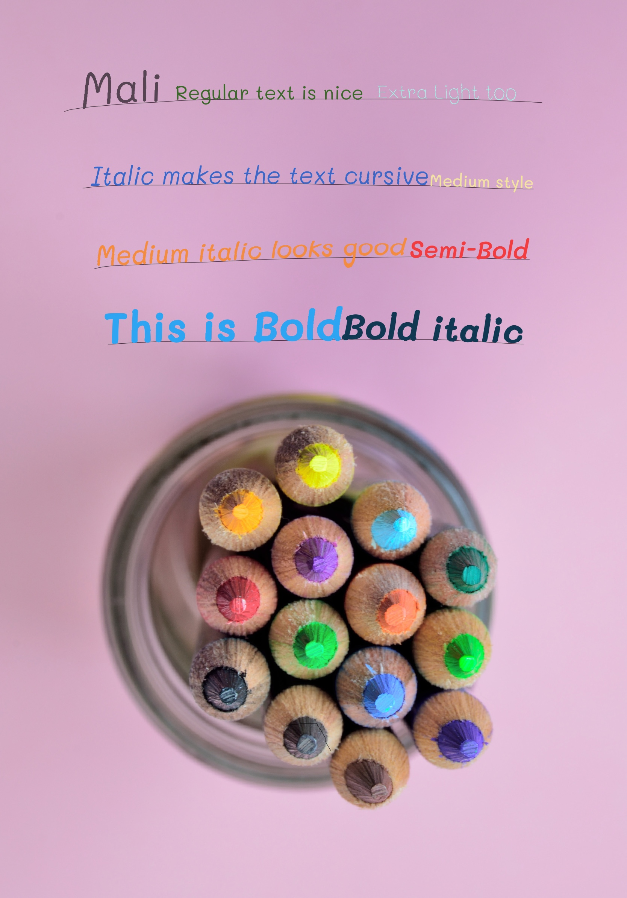

About Mali
License: Open Font LicenseMali is a Thai and Latin family which was inspired by a 6th graders' handwriting. It exudes a carefree and naive appearance. Cadson Demak is the first Thai communication design firm to develop type design solutions. Founded in 2002, the studio came together through a shared love of typography and design, a wish to expand and modernize the font industry as a whole, and the desire to make everyday use of type more accessible.
Styles
ALPHABET
A B C D E F G H I J K L M N O P Q R S T U V W X Y Z Æ Ø Å
A B C D E F G H I J K L M N O P Q R S T U V W X Y Z Æ Ø Å
A B C D E F G H I J K L M N O P Q R S T U V W X Y Z Æ Ø Å
A B C D E F G H I J K L M N O P Q R S T U V W X Y Z Æ Ø Å
0 1 2 3 4 5 6 7 8 9
* ? " ( ) { } ! # $ % & ^ ` <> . , -
alphabet
a b c d e f g h i j k l m n o p q r s t u v w x y z æ ø å
a b c d e f g h i j k l m n o p q r s t u v w x y z æ ø å
a b c d e f g h i j k l m n o p q r s t u v w x y z æ ø å
a b c d e f g h i j k l m n o p q r s t u v w x y z æ ø å
0 1 2 3 4 5 6 7 8 9
* ? " ( ) { } ! # $ % & ^ ` <> . , -
Design example
Type something
«When typography is on point, words become images»
- Shawn Lukas